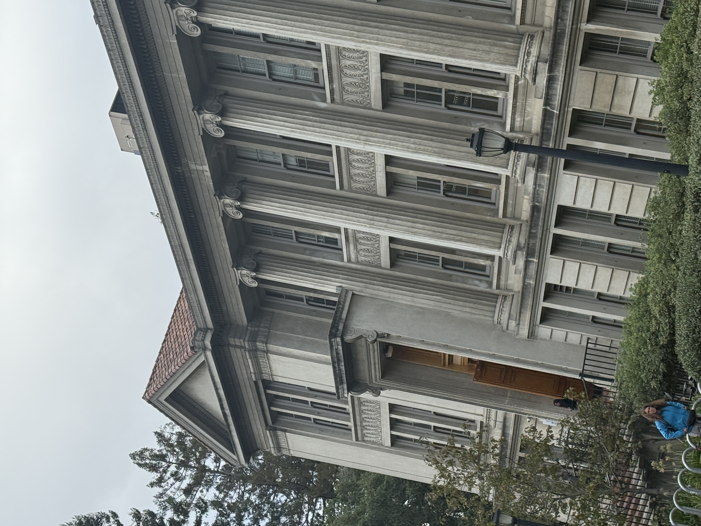
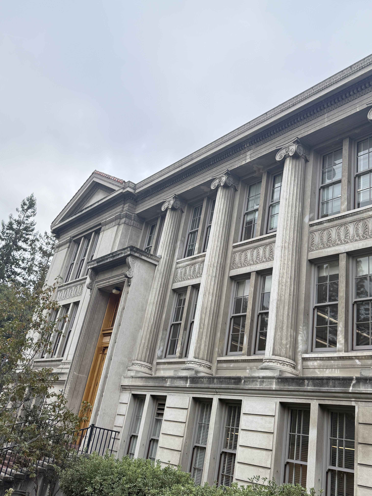
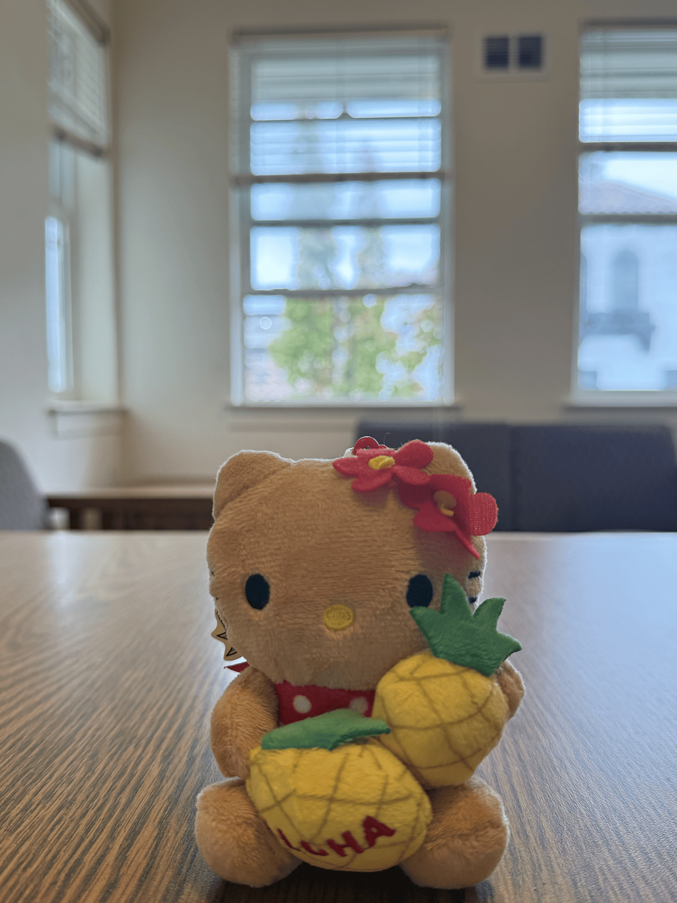

Exploring the relationship between perspective, focal length, and the center of projection — through selfies, architecture, and a dolly zoom.
One photo taken close-up (distorted), one taken from farther back and zoomed in to match the same framing.
在這裡寫你的解釋，取代這句話。
One photo zoomed in from far away, one taken close without zoom — framed so the building appears the same size in both.


I used Berkeley's Physics building as my subject, shooting from Oppenheimer Way. The close-up shot was taken from the sidewalk right next to the building, while the far shot was taken from about 30 meters back, standing near the Chemistry building across the way, zoomed in to match the same framing.
The zoomed-in, far-away photo does look flatter, the windows and columns look about the same width across the whole building. In the close-up photo, they look wider, especially near the edges.
I think this happens because of distance. When I stood close, the nearest column was much closer to me than the farthest column, so the near one looked a lot bigger than the far one, and the building had a strong sense of depth. When I stepped back 30 meters, the difference between close and far columns became small compared to how far away I was overall, so they all ended up looking about the same size. Less difference in distance means less difference in size, so the photo looks flatter.
Moving the camera back while zooming in, so the subject stays the same size but the background perspective shifts — combined into an animated GIF.

For my dolly zoom, I used a tanned Hello Kitty as the subject, placed against a background with some depth so the perspective shift would be visible. I took a sequence of photos while simultaneously stepping back and zooming in, keeping Hello Kitty roughly the same size in frame across all shots while the background compressed and warped behind her. The effect works, but my spacing wasn't perfectly consistent: the interval between my steps back and the corresponding zoom adjustment varied a bit from shot to shot, and my camera angle drifted slightly too. If I redid this, I'd use a tripod or mark fixed floor positions to keep the camera axis constant, and increment the zoom by a fixed amount at each step rather than eyeballing it, that consistency is what makes the "floating" motion in a dolly zoom read as smooth rather than jumpy.